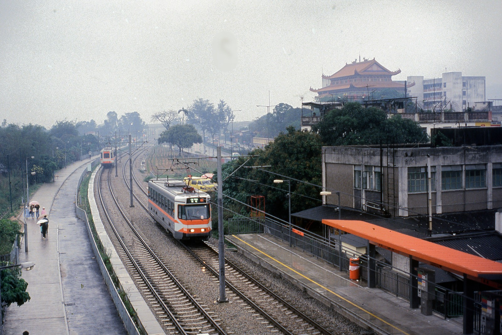
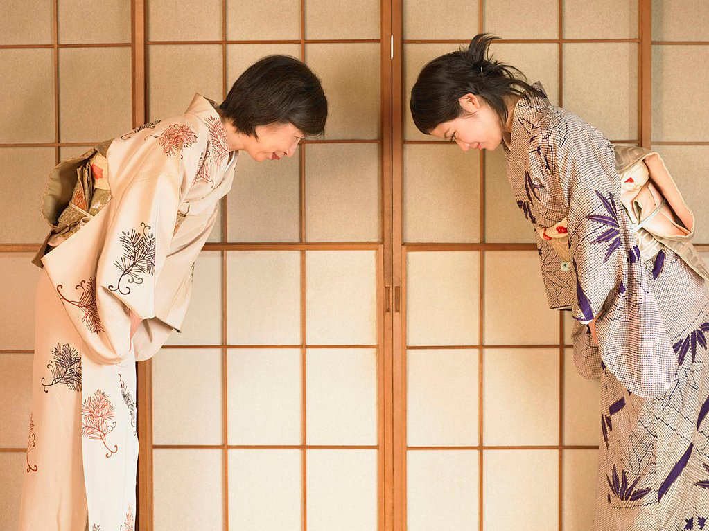
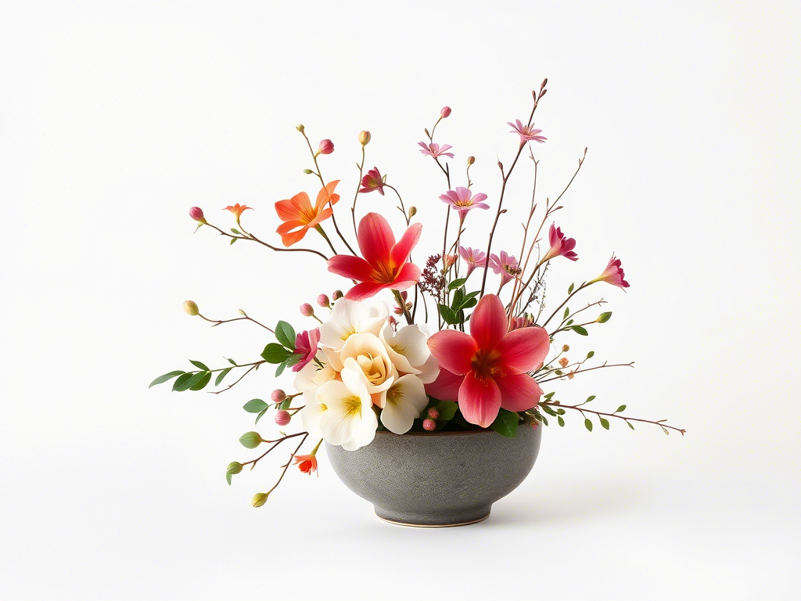
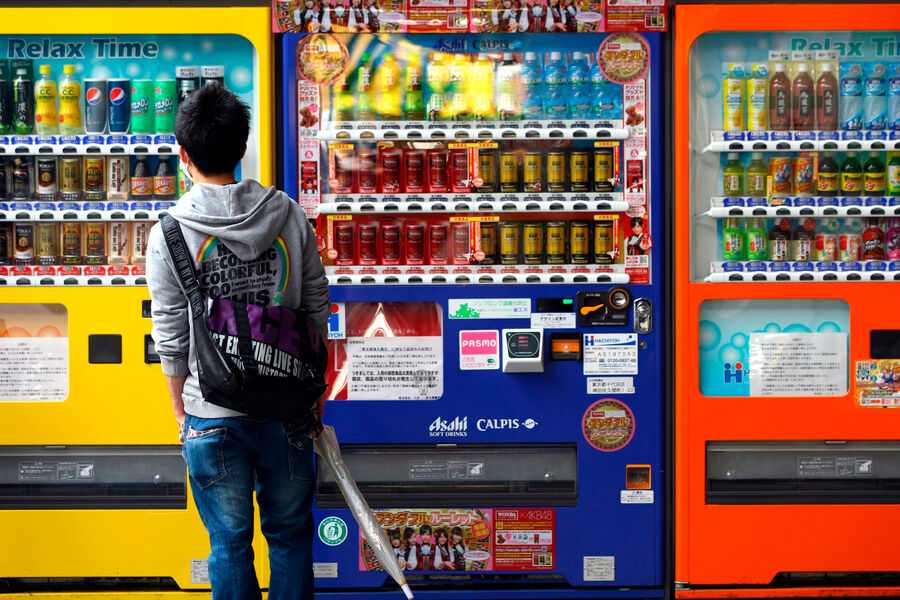
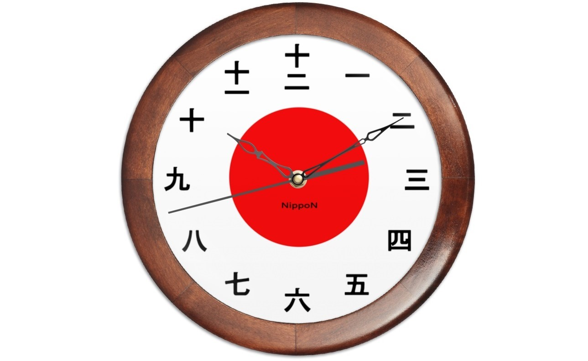

Япония — архипелаг, состоящий из четырёх основных островов: Хонсю, Хоккайдо, Сикоку и Кюсю. В стране четыре ярко выраженных сезона: теплая весна с цветущей сакурой, жаркое лето, золотая осень и холодная зима.
География и климат
История

Начало рисового земледелия и формирования ранней японской культуры произошло более 2500 лет назад.

Золотой век японской культуры начался, когда Киото стал столицей, и буддизм стал основной религией.

Эпоха сёгуната Токугава (1603–1868) принесла время мира и стабильности, когда Япония закрылась от внешнего мира.

Период модернизации и индустриализации начался после Мейдзи-иссин (1868), когда Япония открылась миру и стала современным государством.
Традиции и обычаи
Как кланяться:
Кланяться нужно под разным углом в зависимости от уровня уважения: 15° для обычных ситуаций, 30° для официальных случаев и 45° для глубокого уважения.
Как держать палочки:

Не крестите палочки на тарелке и не передавайте еду с палочек напрямую другому человеку.
Правила поведения в транспорте:
В общественном транспорте нельзя говорить громко, есть или пить. Уступайте место пожилым, беременным и людям с ограниченными возможностями.
В Японии важно соблюдать правила этикета. Например, кланяться при встрече, не есть на ходу и использовать палочки для еды правильно. Уважение к окружающим — ключевой элемент культуры.
Культура

Икебана — традиционное искусство аранжировки цветов в Японии.
Каллиграфия — искусство красивого письма, которое ценится в японской культуре.
Гейши — мастера традиционных искусств, известные своим мастерством танца и музыки.
Интересные факты
Факт №1: В Японии более 6000 островов!

Факт №2: Автоматы с горячим кофе работают круглосуточно.
Факт №3: Здесь существует культурное движение 'Кавай' (милота).

Факт №4: Японцы очень пунктуальны — опоздание считается серьезным нарушением.